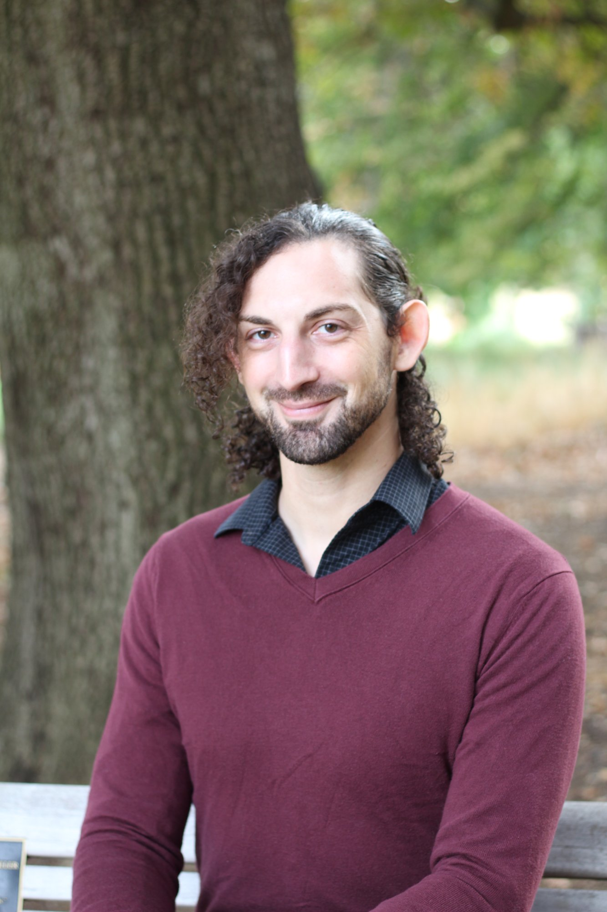
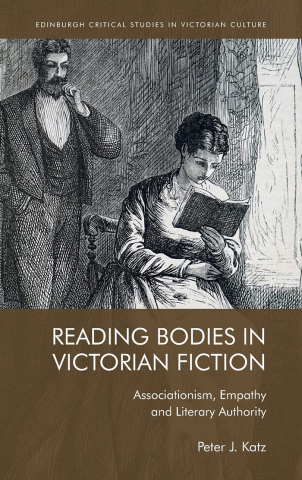
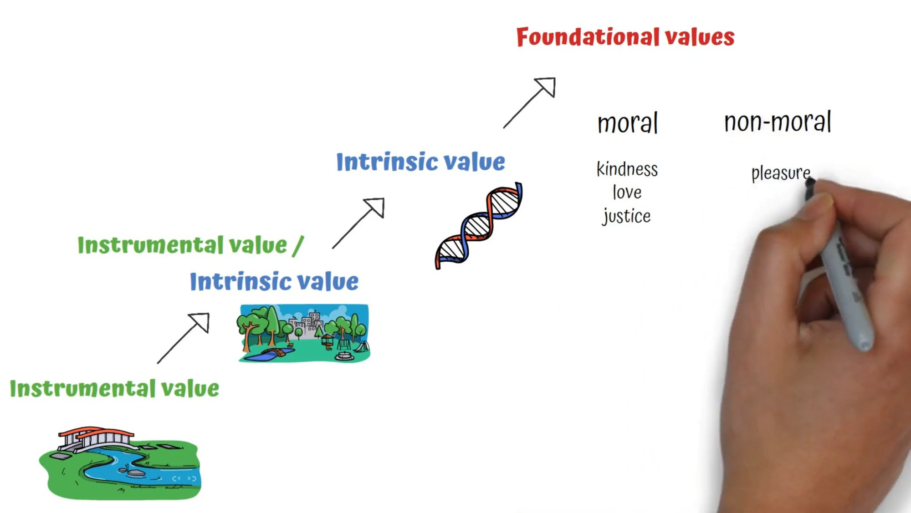

Ph.D., M.A., FHEA
Clinical ethicist and interdisciplinary scholar working at the intersection of epistemic justice, embodied knowledge, and healthcare. I bring together analytic epistemology and continental philosophies of embodiment to explore how patients and care providers make sense of their relationships to each other, health, and society.

I am the Clinical Ethics Fellow at University Hospitals Cleveland Medical Center and Lecturer in Bioethics at Case Western Reserve University School of Medicine. My path to clinical ethics combines philosophy, literature, and embodied practice.
My research addresses epistemic injustice in clinical settings: how do we make sense of one another's stories about illness, pain, and meaning-making? whose stories are validated, and on what grounds? and how do these narratives play out in the relationships between bodies in the clinic? Through the lens of clinical ethics, I explore how we can cultivate embodied, epistemic dispositions toward one another to provide just care.
I wrote the first chapter of my dissertation from a hospital bed. At 24, newly diagnosed with Crohn's Disease and down to 160 pounds at 6'6", I'd planned to argue that reading stories of suffering trains us in empathy and justice.
Then I heard my hospital roommate's three-year-old ask, "Daddy, when are you coming home?"
A pause. A swallow and a ragged breath. "I don't know," he said.
I scrapped my dissertation that night. Empathy—the presumption that I could feel what he felt by reading about people like him—wasn't the answer. The answer was making space for him to tell his own story, to be a knower of his own experience.
This became my life's work: studying how power determines whose knowledge counts, and how to create space for those who are systematically unheard. From Victorian fiction to clinical ethics, I have asked the same question: whose testimony do we recognize, and whose do we dismiss?

Edinburgh University Press, 2022
Explores associationism, empathy, and literary authority in Victorian literature, examining how 19th-century writers theorized the relationship between reading bodies and understanding suffering.
What if we treated moral concepts the way we treat fiction—as stories that compel attention and motivate action?
Bioethics has developed dense definitions of autonomy, dignity, and pain. But this precision can become a trap: the language starts to feel more real than the bodies and relationships it describes. Just Fictions argues that moral fictionalism—importing how we think about fiction into ethics—offers a better path. When we ask "how does it feel to know about dignity?" rather than "what is dignity?", we create space for embodied knowledge and epistemic justice, especially for patients whose testimony is systematically dismissed.
Through Wittgenstein and neuroethics, furthers the challenge to the erroneous claim that autistic people experience an "emapthy deficit" by asking what exactly we mean by "empathy" in this context, and what (if anything) makes that "empathy" moral?
Drawing on the use of the concept of "dignity" in the clinic, redirects the debates around dignity from ontology to epistemology by framing "dignity" as a move in a language-game that shapes our moral consideration of others.
Considers whether pain expressions represent or relate by combining neuroethics, analytic philosophy of language, and continental philosophy of embodiment to develop a more robust understanding of the utterance "I am in pain."
Proposes the importance of including justice claims in clinical ethics consultation notes, centering the perspectives of those most marginalized in healthcare decision-making.
Examines research and treatment on gynecological pain to propose "epistemic deflection" as a kind of pain-related motivational deficit in which the grounds of pain utterances are systematically redirected toward more benign problems so that they can be readily dismissed.
Brings together Foucault, Hobbes, and martial arts practices to explores how the rhetoric of "self-defense" relies on willful ignorance to inculcate the embodied habits of fascism.
International Conference on Clinical Ethics and Consultation
Case Western Reserve University, Cleveland, OH | June 2026
Conference on Medicine and Religion
Houston, TX | March 2026
Association for Practical and Professional Ethics
St Louis, MI | March 2026
As Clinical Ethics Fellow at University Hospitals Cleveland Medical Center, I provide ethics consultation across the hospital system (at present >200 individual consults), collaborate on policy development, and serve on multiple ethics committees including Pediatric Ethics and Patient-Without-Proxy.
My clinical work focuses on epistemic justice: ensuring that marginalized patients' perspectives are heard and valued in healthcare decision-making. I'm particularly interested in cases involving chronic pain, disability, and end-of-life care, where power asymmetries often determine whose knowledge counts.
Centering marginalized voices in clinical ethics consultation
Addressing epistemic injustice in pain assessment and treatment
Navigating moral meaning-making in withdrawal of life-sustaining treatment
Supporting healthcare teams through ethically challenging cases
"People who think they know me and my body better than I do"
Everything about Ms. Clifford's charts suggested she lacked capacity. She refused diagnostic procedures, seemed confused about her medical situation, couldn't articulate why. The hospitalist notes were clear: unable to justify her refusals.
The team paged me to do a capacity evaluation. When I first entered and called her name, Ms. Clifford barely roused. When I asked if I could speak with her, she grunted vaguely. I pulled up a chair, anticipating a short visit to confirm she lacked capacity. I introduced myself and asked my usual opener: "I'd like to get to know you a little more before we get into the clinical things. Can you tell me about yourself?"
She sat in silence for a second.
Then she took the headphones out of her ears.
Over our half-hour conversation, I learned that Ms. Clifford had been a nurse on the floor of the community hospital for decades before transitioning to home healthcare. She told me what it was like to be a Black woman in medicine in the seventies, made fun of me for my reliance on the electronic medical record—"We had to write things down, in my day"—told me about her recently-passed husband and how much she had loved him.
When a natural pause came, I paused. Sighed. Our eyes met. I could see she knew what I was going to say. "Ms. Clifford, you know they think it's cancer."
"I know, honey. I know. I just didn't want to talk to that attending any more. I've dealt with his kind my whole life: people who think they know me and my body better than I do." She exhaled. "I'm in my eighties. I had a great life. Even if they diagnosed me, I don't know if I'd do anything about it." She winked at me. "If I end up back here, they can write 'Nanny-nanny-boo-boo, we told you so' in my chart."
"I'm putting that in my note."
"Good."
I don't know what happened to Ms. Clifford after she discharged from the hospital. But I'm glad that I was able to sit with her, to hear her story and affirm her knowledge of herself. This is the work of clinical ethics I care most about: creating space for patients' voices.
I serve as Editor-in-Chief of Martial Arts Studies, a peer-reviewed journal published by Cardiff University Press that explores the cultural, historical, and philosophical dimensions of martial arts practice. Martial arts have been a lifelong practice for me: I began training in martial arts when I was 6 years old, and have trained in American Kenpo (30 yrs), Aikido (10 yrs), Taekwondo (5 yrs), Shotokan Karate (5 yrs), and Brazilian Jiujitsu (3 yrs).
My work in martial arts studies centers on embodiment, epistemology, and ethics. I examine how embodied practices cultivate particular orientations toward the world and others—questions that bridge my clinical ethics work and martial arts scholarship.
Recent research brings together clinical ethics consultation with Brazilian Jiujitsu to think about asymmetrical relationships, mutual vulnerability, and how power dynamics shape our capacity for moral attention.
I believe ethics education should be experiential, reflective, and deeply connected to students' future practice. My teaching combines flipped classroom videos, self-grading rubrics that cultivate metacognition, and essay assignments that introduce students to professional practice like consultation note-writing, or peer review and publication.
I create short instructional videos that students watch before class, freeing class time for discussion, case analysis, and collaborative problem-solving.

Students use self-grading rubrics to assess their own work, developing metacognitive skills and taking ownership of their learning.
To connect student work to their professional and personal growth (and to confront the AI Question), assigments invite students to develop practices relevant to their fields: peer-review, revision, and publication processes for philosophy and bioethics, and EMR note-writing for clinical ethics.
Sample Syllabi: Health, Illness, and Disability Pain Introduction to Ethics
Clinical Ethics Rotation, Urban Bioethics II, Topics in Bioethics (Disability; Pain; Dignity; Dental Ethics), Introduction to Medical Ethics Ethical Issues in Biotechnology, Introduction to Philosophy (Epistemology), Introduction to Ethics, Philosophy of Language, History and Philosophy of Science, Medical Humanities, Animal Studies and Ecocriticism
Recognition: Fellow of the Higher Education Academy (UK, 2022), Educator of the Year (Pacific Union College, 2018), Elson Teaching Award (Syracuse University, 2014)
I'm always happy to discuss clinical ethics, research collaborations, speaking opportunities, or questions about bioethics education.